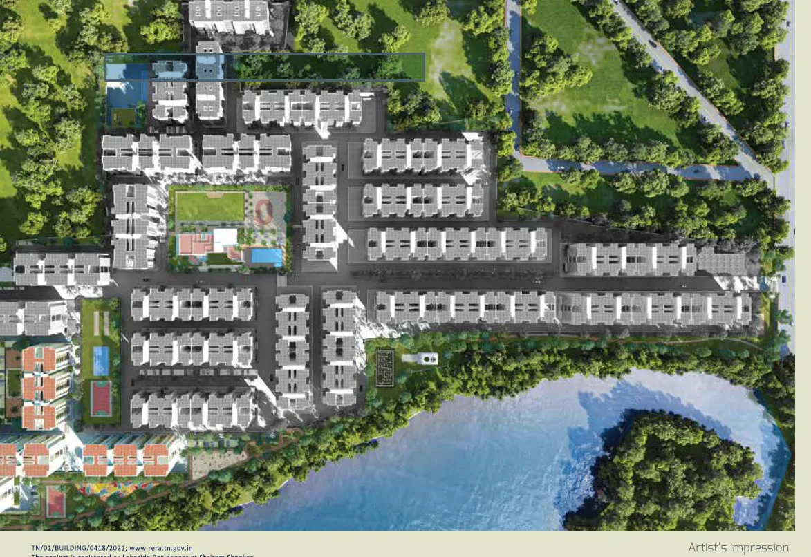

Search results and property portals for Shriram Shankari can be genuinely confusing: some list "Shriram Shankari Phase 1," others "Shriram Shankari Phase 2," and the developer's own current marketing pushes a third name entirely, "Codename: The View" (also referenced as "Lakeside Residences"). These aren't three different projects, they're the same 36-acre Guduvanchery township at different points in its sales history, but each carries its own RERA registration and its own pricing, and treating them as interchangeable risks quoting the wrong legal number or the wrong price list. This article walks through exactly what separates the current Phase 2 launch from the earlier Phase 1, so a reader doesn't accidentally conflate the two while researching this project.
1. The Two Phases, at a Glance
Shriram Shankari has been developed and marketed in at least two distinct phases on the same 36-acre site in Perumattunallur, Guduvanchery:
- Phase 1, RERA TN/01/Building/0035/2020: an earlier launch, registered in 2020, marketed with a wider 1, 2 and 3 BHK configuration mix across sizes ranging roughly from 585 to 1,670 sq.ft.
- Phase 2, publicly marketed as "Codename: The View" / "Lakeside Residences," RERA TN/01/BUILDING/0418/2021: the current active launch, registered in 2021, offering 1 BHK homes in Tower 8 and 2 BHK homes in Tower 27.
The internal codename "Codename: The View" is worth knowing specifically because it's how the developer's own current sales material and site signage refer to this launch, while third-party property portals more often index it simply as "Shriram Shankari" or "Shriram Shankari Phase 2," without necessarily making the codename connection obvious to a first-time researcher.
2. RERA Registration: Two Separate Numbers, Not One
Because these are legally distinct phases, each has its own RERA project registration, and neither should be substituted for the other when verifying a purchase:
| Phase | Marketing Name | RERA Number | Registered |
|---|---|---|---|
| Phase 1 | Shriram Shankari Phase 1 | TN/01/Building/0035/2020 | 2020 |
| Phase 2 | Codename: The View / Lakeside Residences | TN/01/BUILDING/0418/2021 | 2021 |
If you are booking a fresh unit today in Tower 8 or Tower 27, the registration relevant to your purchase is almost certainly Phase 2's: TN/01/BUILDING/0418/2021. Quoting Phase 1's 2020 registration for a Phase 2 booking, or vice versa, would misstate which phase's legal disclosures, escrow account and completion timeline actually apply to your money. We recommend verifying whichever number is relevant to your specific tower directly on the TNRERA portal (rera.tn.gov.in) before signing anything, and reading our full Shriram Shankari price, layout & RERA review for the complete breakdown of the current Phase 2 launch.
3. Configuration Mix: A Wider Phase 1, a Focused Phase 2
One of the clearest differences between the two phases is the configuration mix on offer. Phase 1's marketing material and third-party listings describe a broader spread, 1, 2 and 3 BHK homes ranging from roughly 585 sq.ft up to 1,670 sq.ft. The current Phase 2 launch is narrower and more focused: just 1 BHK in Tower 8 (656-676 sq.ft) and 2 BHK in Tower 27 (1,080-1,100 sq.ft), with no 3 BHK on offer in this specific launch. If a 3 BHK configuration is a hard requirement for you, that's a meaningful reason to ask specifically about Phase 1 resale availability rather than assuming the current Phase 2 launch will eventually offer one.
4. Pricing Comparison
Third-party listings for Phase 1 report a wide price band, roughly ₹29.84 Lakhs to ₹87.21 Lakhs depending on configuration and unit, working out to an average of approximately ₹5,000 per sq.ft, which is consistent with an earlier-vintage launch. Phase 2's verified starting prices run somewhat higher per sq.ft, ₹36.3-39.7 Lakhs for a 656-676 sq.ft 1 BHK and ₹62-66 Lakhs for a 1,080-1,100 sq.ft 2 BHK, which works out closer to ₹5,500-5,900 per sq.ft. That gap is typical of how a newer phase in the same township is usually priced above an earlier one, reflecting both general market appreciation in the Guduvanchery-GST Road corridor since 2020 and the newer launch's own positioning.
*Phase 1 figures are drawn from third-party listing aggregators, not the developer's own current price list, and should be treated as indicative rather than exact. Phase 2 figures come from the current launch's own pricing card. Please enquire directly for verified, up-to-date pricing on either phase.
5. Shared Township, Shared Amenity Philosophy
Even though Phase 1 and Phase 2 are separate legal registrations, they sit on the same 36-acre master-planned Shriram Shankari site, sharing the township's overall amenity philosophy: a central clubhouse and green belt, a lake-facing landscape design, and a mix of sports, community and commercial facilities described across the master plan. Phase 2's own clubhouse is specifically a 12,000 sq.ft multi-level facility with 45+ amenities. Depending on how the developer has structured access and maintenance across phases, a detail worth confirming directly, a Phase 2 resident may benefit from shared township infrastructure that has had more time to mature, rather than a completely fresh set of facilities built and tested for the first time alongside their own move-in.
6. Should You Consider a Phase 1 Resale Instead?
For a buyer who specifically needs a 3 BHK configuration, or who prioritises an earlier, more-established phase of the township over new-construction pricing, a resale unit in Phase 1 is worth evaluating as an alternative to booking into the current Phase 2 launch. The trade-offs run in both directions: a resale skips whatever construction timeline still applies to Phase 2's Tower 8 and Tower 27, and may offer a wider choice of configuration, but it also means running a different due-diligence checklist than a standard developer booking, verifying the seller's title and sale deed, confirming there's no outstanding loan or lien on the specific unit, checking the housing society's transfer process, and independently confirming property tax and maintenance dues are current before any money changes hands. It's worth asking our team specifically about current Phase 1 resale availability alongside a Phase 2 enquiry if this fits your situation.
7. A Quick Decision Framework
Putting the comparison together, here's a simple way to think about which phase actually fits your situation:
- Want a fresh, under-construction 1 BHK or 2 BHK with new-launch pricing: Phase 2, Codename: The View, RERA TN/01/BUILDING/0418/2021, is the current active option, with early units targeted mid-2027.
- Specifically need a 3 BHK, or want a more established phase of the township: ask about Phase 1 (RERA TN/01/Building/0035/2020) resale availability rather than assuming the current launch will offer one.
- Prioritising the lowest possible entry price per sq.ft: Phase 1's older, 2020-vintage pricing is likely to run lower per sq.ft than Phase 2's current launch pricing, though this should be confirmed against current resale listings rather than assumed.
- Verifying legal documentation before booking either phase: always match the RERA number you're checking to the specific tower and phase you're actually buying into, the two numbers are not interchangeable.
Our Honest Assessment
The clearest takeaway from comparing these two phases is that they are genuinely different products within the same township, not a simple relaunch of the same inventory under a new name. Phase 2's Codename: The View is a tighter, higher-per-sq.ft launch focused on 1 and 2 BHK homes in two specific towers, while Phase 1 offered a broader configuration mix at what now looks like earlier-vintage pricing. Neither is objectively "better," the right choice depends on whether you need a specific configuration, how comfortable you are with Phase 2's under-construction timeline, and whether a Phase 1 resale's different due-diligence process suits you.
What matters most for legal safety is not conflating the two: verify TN/01/BUILDING/0418/2021 specifically if you're booking a fresh Tower 8 or Tower 27 unit today, and TN/01/Building/0035/2020 only if you're evaluating an actual Phase 1 resale, independently on the TNRERA portal (rera.tn.gov.in) in either case, before signing anything.